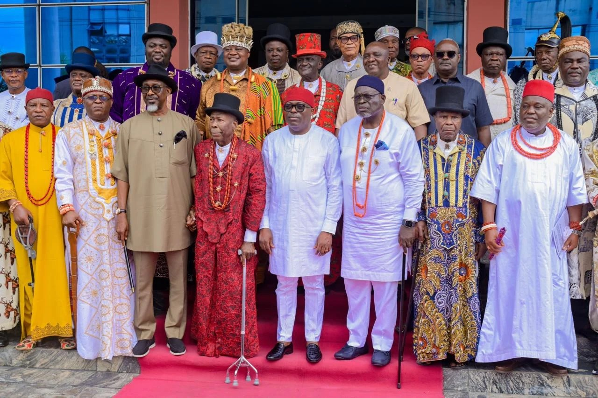

2027: Fubara urges Rivers monarchs to remain neutral

Rivers State Governor Siminalayi Fubara has urged traditional rulers to remain fair and promote peace as political activity increases ahead of the 2027 general elections. He made the appeal while opening the 126th, 127th and 128th combined quarterly meeting of the Rivers State Council of Traditional Rulers in Port Harcourt on Wednesday.
Fubara said traditional leaders’ roles in administering justice and ensuring fairness made it important for them to avoid conduct that could divide communities or trigger crises. He asked them to honour the oaths and constitution they accepted before taking their stools, and to put Rivers State’s interests above personal sentiments. He said prioritising the state’s interests was also a principle he applied in governing.
Addressing requests for improved welfare, Fubara said delays in meeting some past requests were due to the council’s inability to organise its own affairs, rather than a failure by the state government. He also said stipends paid to traditional rulers by local government councils were a statutory benefit under the constitution, which a governor could not change through a verbal announcement. Fubara said he would fulfil his promises to the rulers before leaving office next year.
Earlier, council chairman and Paramount Ruler of Apara Kingdom, Chike Amadi Worlu Wodo, thanked the state government for maintaining cordial relations with the traditional institution. He said rulers were well placed to help resolve disputes because of their proximity to communities, including conflicts over chieftaincy, family matters and land ownership.
Source: Punch